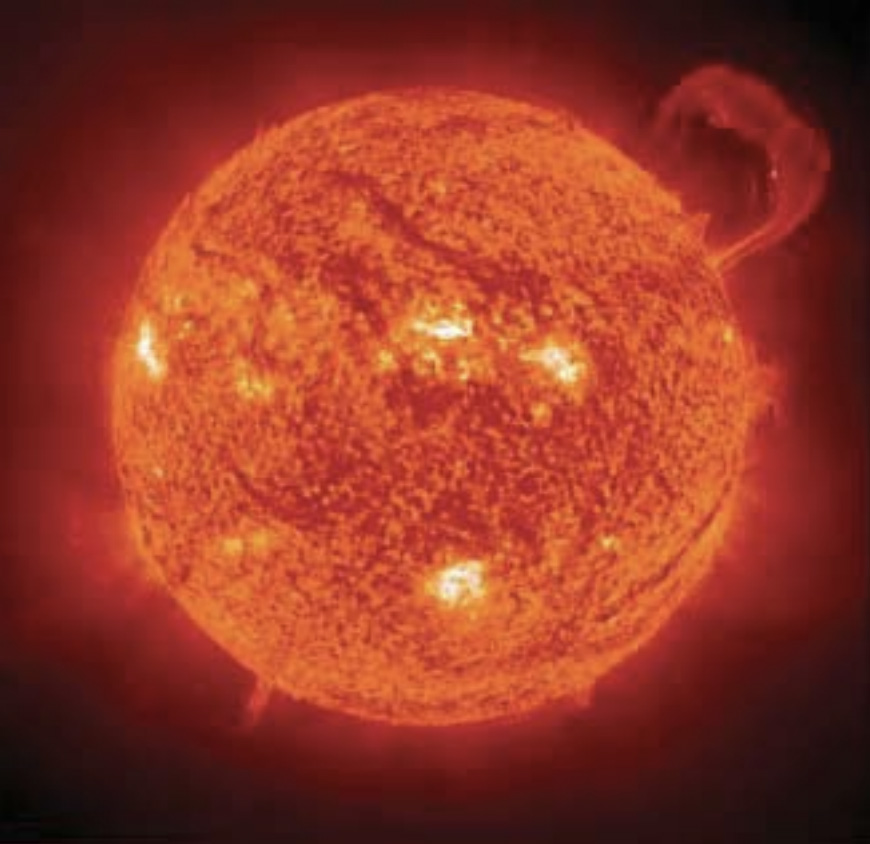
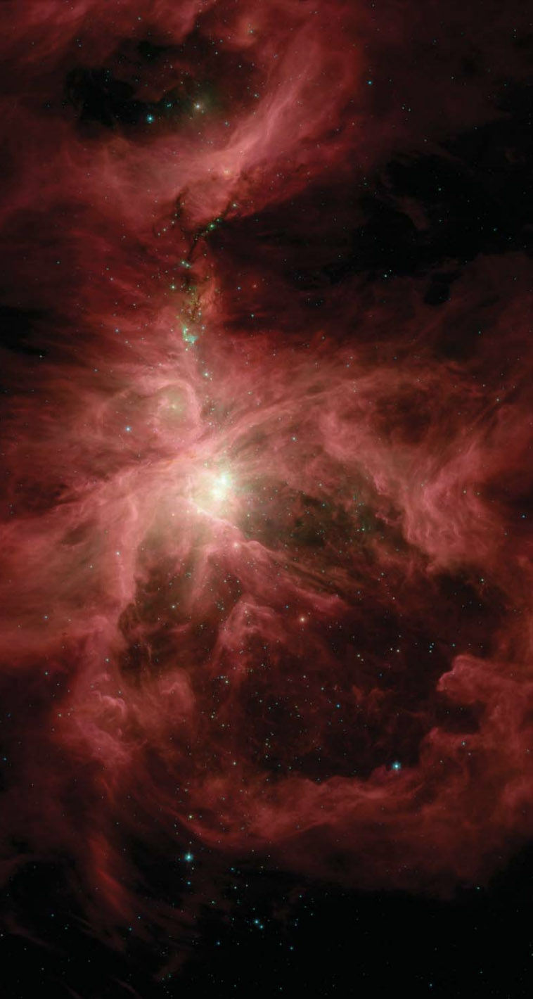

What's in space?
By Linda Herman-Killam

When you look up at the night sky, you see stars and sometimes the moon and the brighter planets. Away from city lights, on a clear night, you might see the beautiful band of the Milky Way, stretching across the sky.
Is there anything else up there in space?
Yes, there is much more! There are many beautiful, strange, and mysterious objects in space. We are lucky that we now have large telescopes to help us see far into space. Let’s take a look through these telescopes.
What do you think we might see?
With telescopes we can get a much better view of the planets and moons in our solar system. We can even send satellites to the planets and get close up pictures. By studying the planets and their moons we can learn what they are made of and learn more about our own Earth.
By using special telescopes, scientists can get a better view of our Sun. We can see that the Sun is not smooth and can see many features on the Sun’s surface. Never look at the Sun with your eyes or through a telescope! The Sun’s intense light can damage your eyes.
Looking farther away, we can see other stars. Some are like our Sun, while others are much larger or smaller. Stars come in many different colors. We do not see the colors of the stars when we look up into the night sky because they are too dim. But, telescopes can collect more light and show us the colors of the stars.
Telescopes show us the giant clouds of gas and dust where stars are born. Stars form when parts of these clouds collapse and get hot enough to make their own light. Our solar system started in one of these clouds. There are many of these clouds in space.
When a star runs out of fuel, part or all of the star expands into space. Some stars shed their outer layers while the largest stars explode. The material from these stars help form new clouds where new stars will form.
So, the material from stars is recycled.
Stars, planets, and clouds of gas and dust are all collected into galaxies where they are held together by a force called gravity. Galaxies are huge, and can have billions of stars in them. They come in many different shapes. Some look like giant spirals, some look like stretched circles (elliptical), and some have an irregular shape. We live in a large spiral galaxy called the Milky Way.
As we look out even farther into space we see more and more galaxies. There are billions of galaxies in space, each holding billions of stars. Almost everything in this picture is a galaxy.
These are just a few of the pictures that have been taken by telescopes. Telescopes are used on the Earth and in space to see farther and farther out into the Universe. The Universe is a very big place to explore and many of its secrets are yet to be discovered.